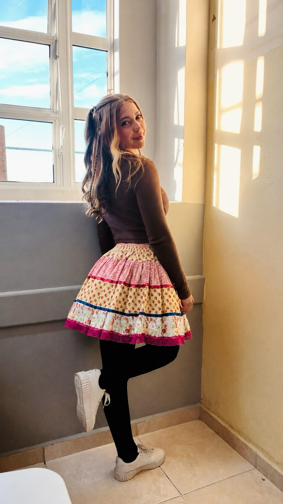
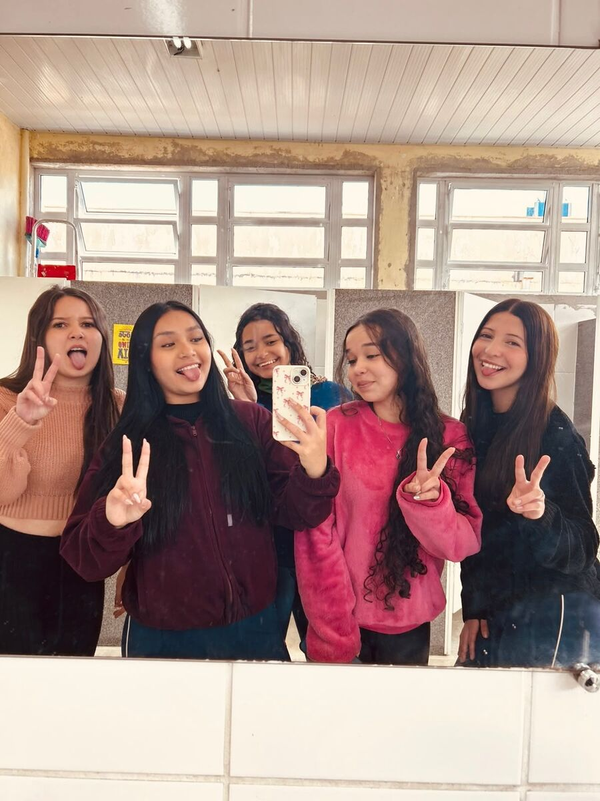
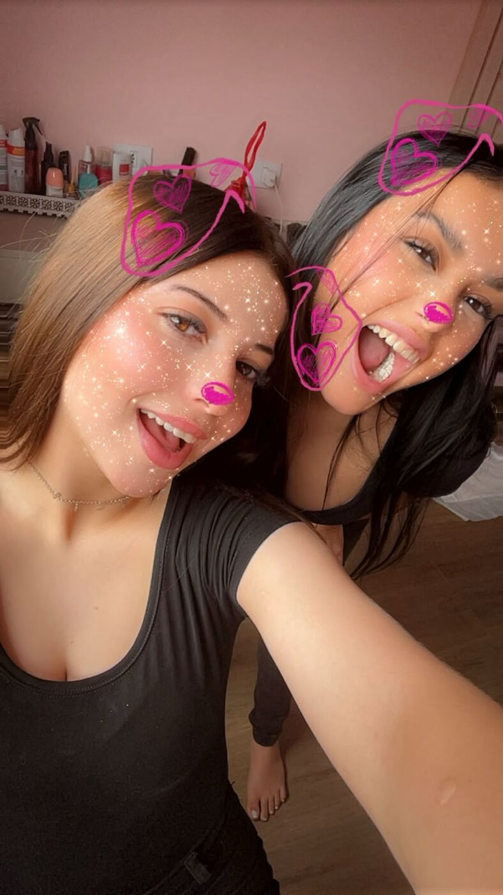
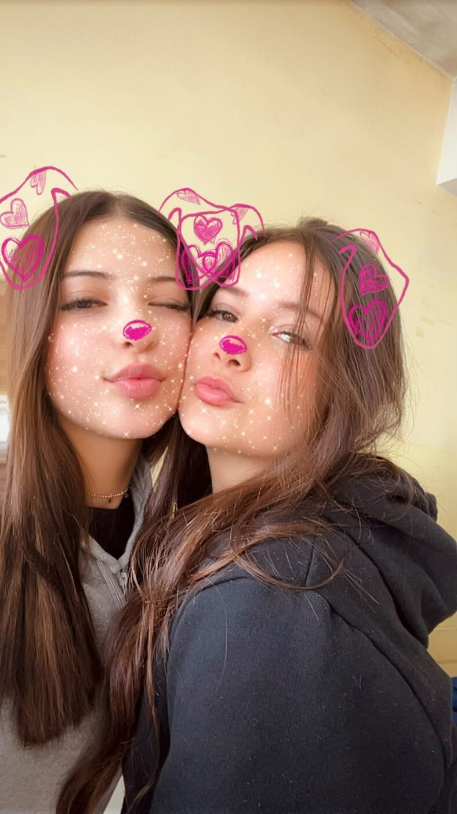
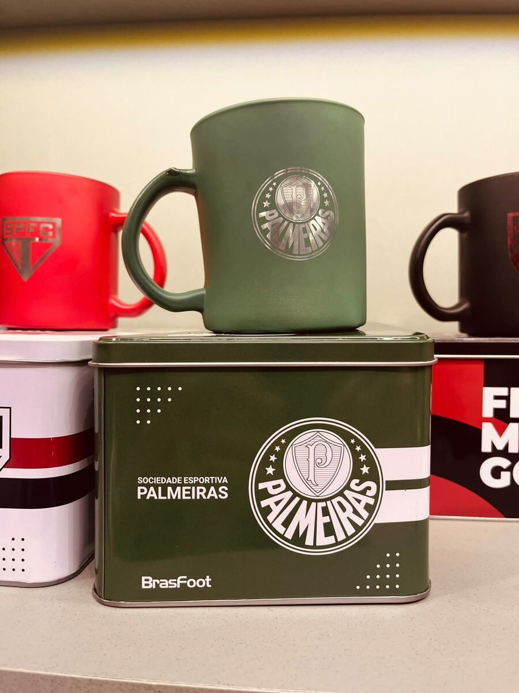

Portfólio · 2026
Thayla Amaral estudante de tecnologia
Estou no 2º ano do curso técnico em Desenvolvimento de Sistemas e venho aprendendo a transformar ideias em páginas que funcionam. Este é o meu espaço para mostrar o que já construí — e o que ainda vou construir.

Quem sou eu
Curiosidade, prática e vontade de aprender
Sou estudante da Escola Estadual Professor Júlio Szymanski, onde curso Desenvolvimento de Sistemas. Comecei a programar nas aulas de tecnologia e desde então venho juntando o que aprendo em páginas pessoais, exercícios e pequenos projetos.
Gosto de entender como as coisas funcionam por dentro: prefiro testar, errar e ajustar até o resultado ficar do jeito que imaginei. Este site é justamente isso — um projeto que cresce junto com o meu aprendizado.
Explore o portfólio
Três caminhos para me conhecer
Cada página reúne uma parte do meu trabalho: a história, o projeto prático e as formações que sustentam tudo isso.
Minha trajetória
Como cheguei à programação, o que aprendi em cada trimestre e o que quero conquistar daqui para frente.
Tetris jogável
Um jogo completo construído com HTML, CSS e JavaScript — com placar, níveis, prévia da próxima peça e controle no celular.
Certificados
Cursos, formações e projetos concluídos que registram a evolução do meu aprendizado na área de tecnologia.
Além da tela
Mais que um time
O Palmeiras acompanha a minha história desde sempre. O verde e o branco aparecem aqui como identidade, do mesmo jeito que aparecem na arquibancada: com orgulho e com a certeza de que o time nunca desiste.
Conhecer esse ladoBastidores
Quem faz parte do caminho
A escola é feita de gente. Estas são algumas das pessoas e dos momentos que deixam os dias de aula mais leves.




Vamos conversar
Gostou do que viu?
Estou sempre aberta a aprender com novas pessoas, trocar ideias sobre tecnologia e receber sugestões para os meus projetos.
Resposta em até 2 dias úteis.